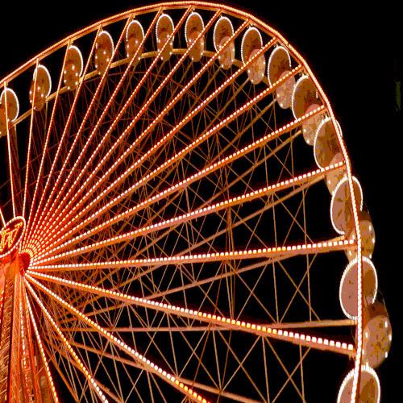
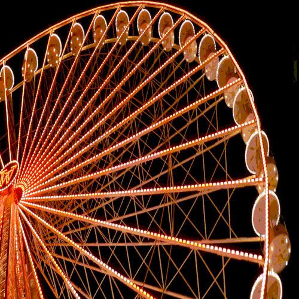
 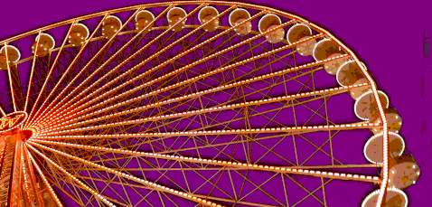
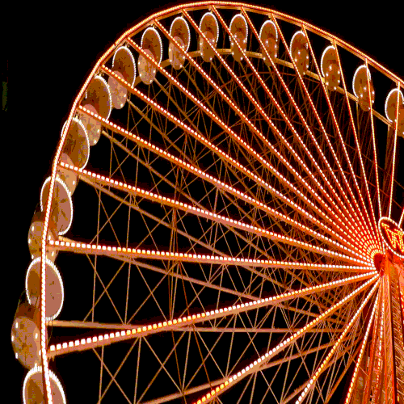
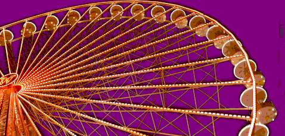
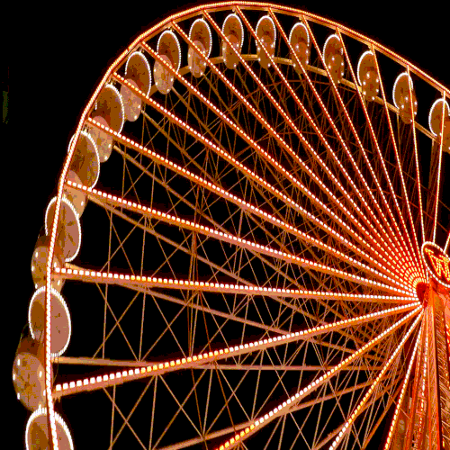
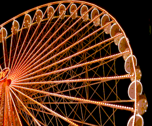
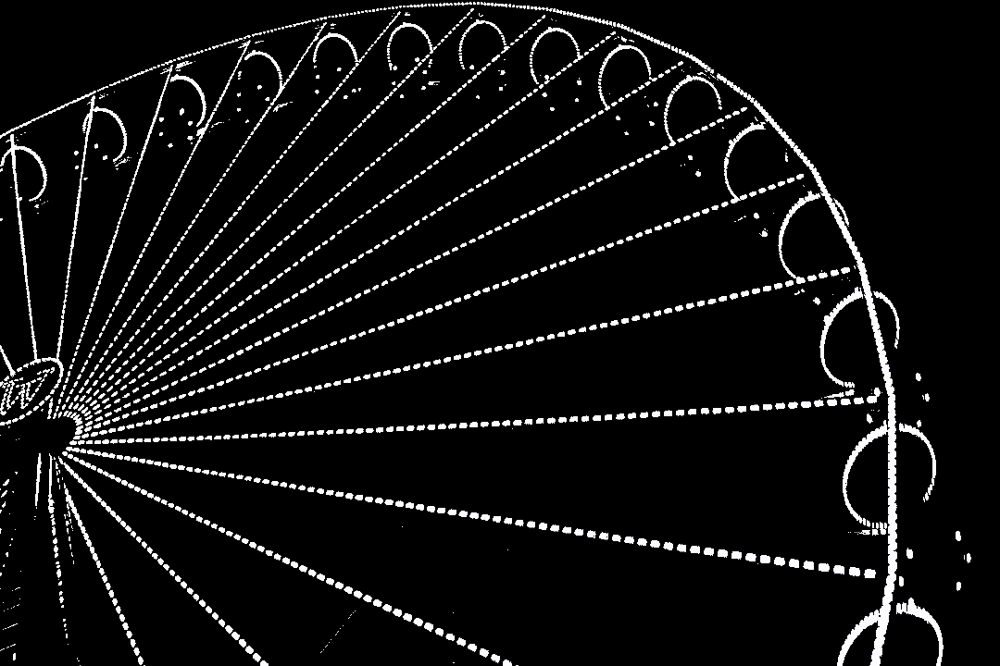
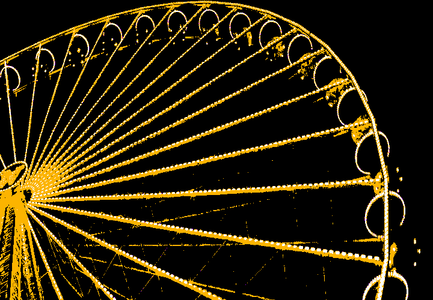
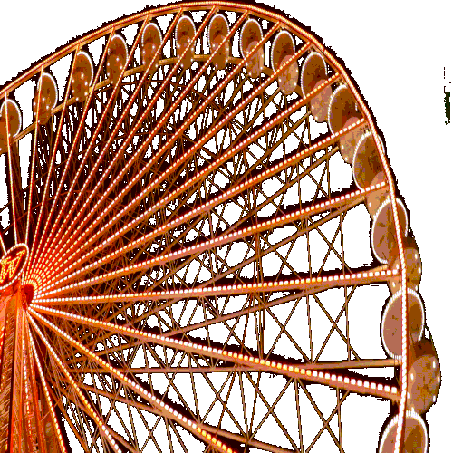
One of the largest big wheels in Europe was located at Basel’s Münsterplatz from 24 October 2020 to 3 January 2021 . Despite the cancellation of the autumn fair due to the coronavirus, one of its main attractions still lit up our skyline last year.
Inspired by this beautiful attraction in the winter I decided to use the videos for my glitch project. Experimenting with the vivid colors in this video yeilded some extremely interesting outputs. Here is a visual arcive.
Using AviDemux I played around with the I, P and B frames to create glitched videos. After converting these videos to .mp4 files I further created .gifs with FFMPEG and GIFSICLE on the command line. From reducing the number of colors to flipping the videos I explored the various offering of gifsicle.Below is a breakdown of my workflow post glitching on AviDemux
From top to bottom - COLUMN 1 - LEFT
Glitch_1
resized img
converted .mp4 > .gif
Glitch_2
resized video - rectangle > square
increased speed
converted .mp4 > .gif
Glitch_3
resized video - rectangle > square
reduced speed
converted .mp4 > .gif
exploded frames to .png
Glitch_4
reduced size of video
reduced colors to 2
converted .mp4 > .gif
Glitch_5
reduced size of video
reduced speed
reduced colors to 4
converted .mp4 > .gif
Glitch_6
increased size of video
increased speed
used transparency for black
converted .mp4 > .gif
From top to bottom - COLUMN 2 - RIGHT
Glitch_7
resized img
converted .mp4 > .gif
Glitch_8
increased size of video
increased speed
converted .mp4 > .gif
Glitch_9
increased size of video
iflipped horizontal
converted .mp4 > .gif
Glitch_10
reduced size with disproportionally
replaced black with purple
converted .mp4 > .gif
Glitch_11
increased speed
flipped vertical
converted .mp4 > .gif
Glitch_12
reduced size
converted .mp4 > .gif
------------------------------------------------
For more of my glitch experiments>
Tumblr / digicult2021-ankita-dsouza
ANKITA D'SOUZA MDES_2021
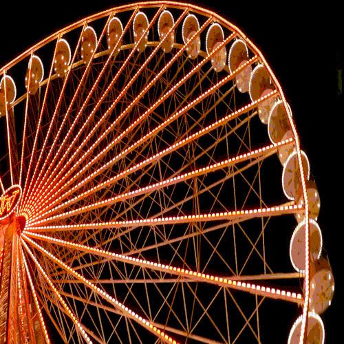
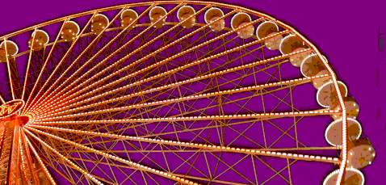
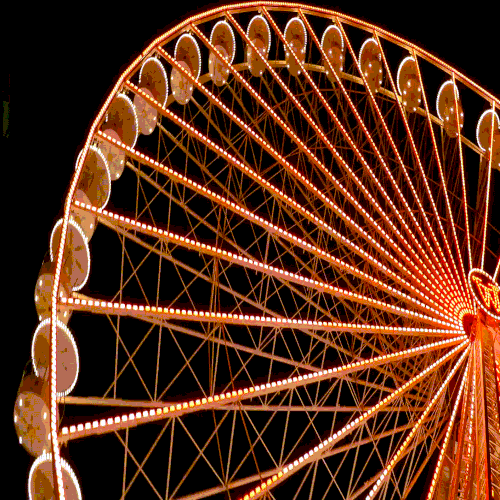